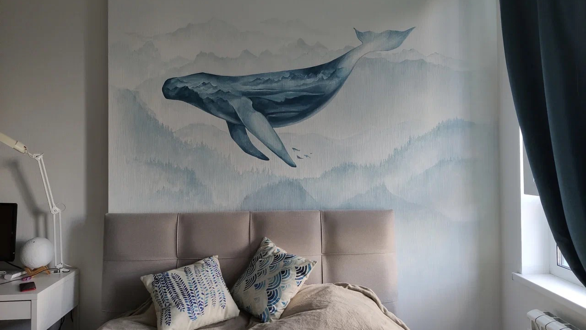

<section class="bl-header_photo @@class_main @@class_main2">
  <div class="bl-header_photo__slider">
    <div class="swiper js-swiper-header_photo">
      <div class="swiper-wrapper">
        <div class="swiper-slide">
          
        </div>
        <div class="swiper-slide">
          
        </div>
        <div class="swiper-slide">
          
        </div>
        <div class="swiper-slide">
          
        </div>
      </div>
      <div class="header_photo_yell"></div>
      <div class="bl-header_photo__texts">
        <div class="container">
          <div class="bl-header_photo__content">
            <h1 class="title_h1 max710">
              Художественное оформление вертикальных поверхностей
            </h1>
            <p class="max710">
              Используем различные технологии нанесения изображений. В нашем арсенале немецкое
              оборудование, Итальянские технологии
              холодного трансфера и другие бесшовные покрытия.
            </p>
            <a href="#" class="btn-m btn-red">
              Узнать подробнее
            </a>
          </div>
          <div class="swiper-pagination"></div>
          <div class="swiper-button-prev">
            <svg class="icon arrow-left">
              <use xlink:href="./img/svg/sprites.svg#arrow_left_white"></use>
            </svg>
          </div>
          <div class="swiper-button-next">
            <svg class="icon arrow-right">
              <use xlink:href="./img/svg/sprites.svg#arrow_right_white"></use>
            </svg>
          </div>
        </div>
      </div>
    </div>
  </div>
</section>